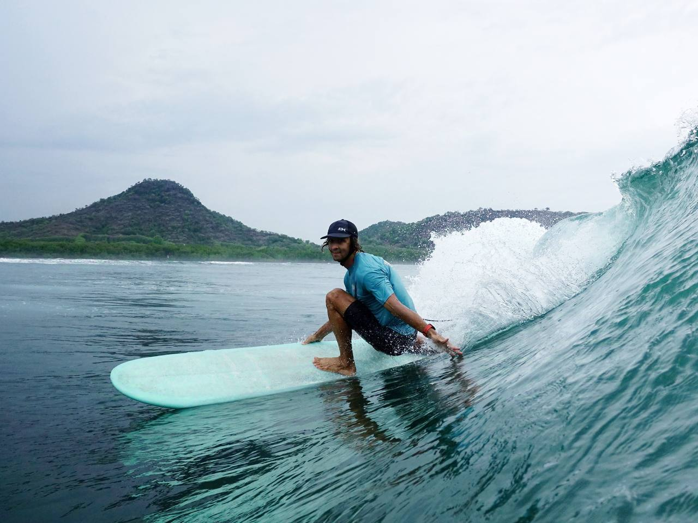
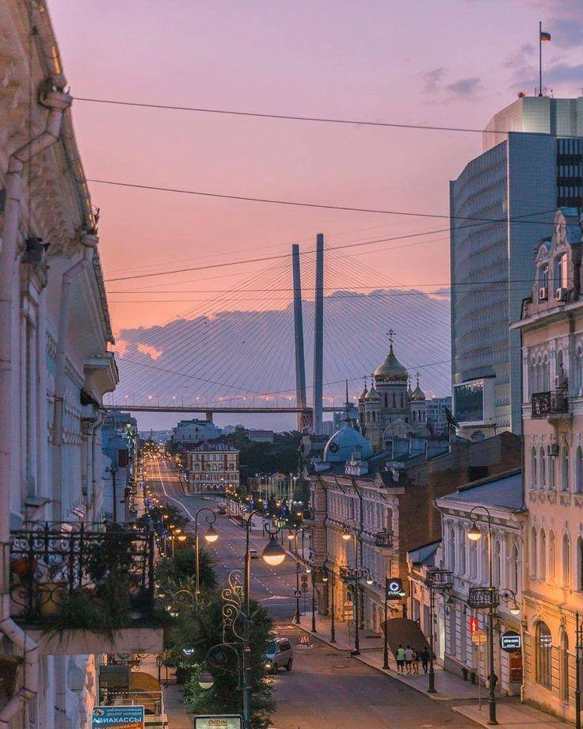
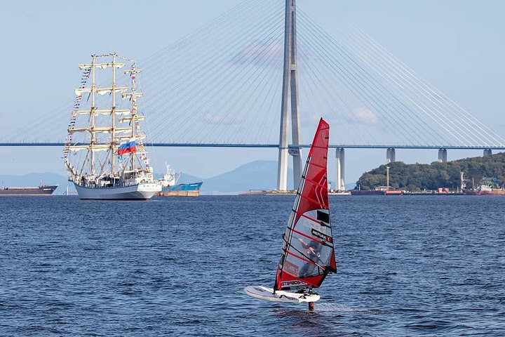
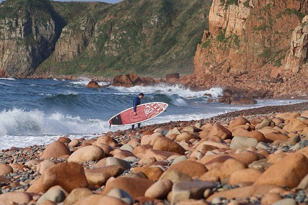
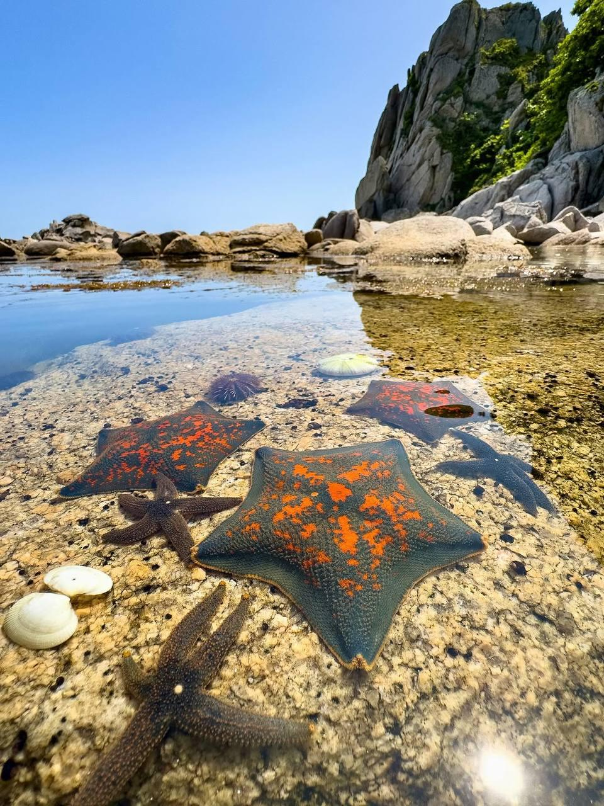
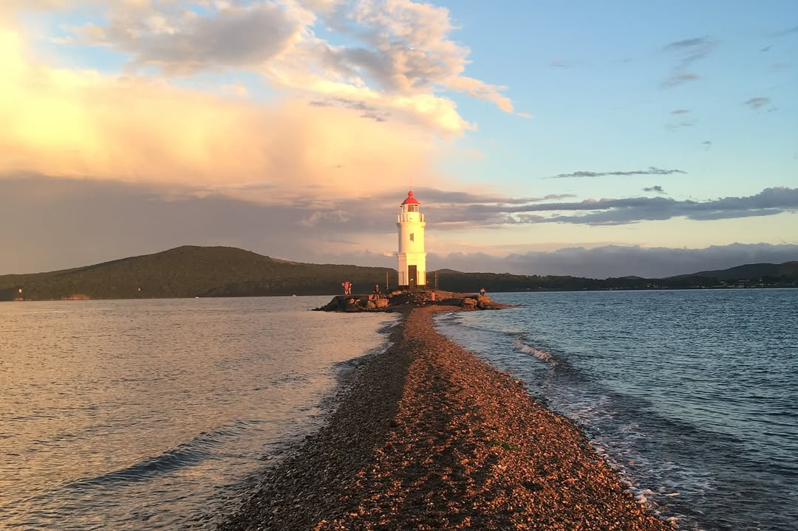
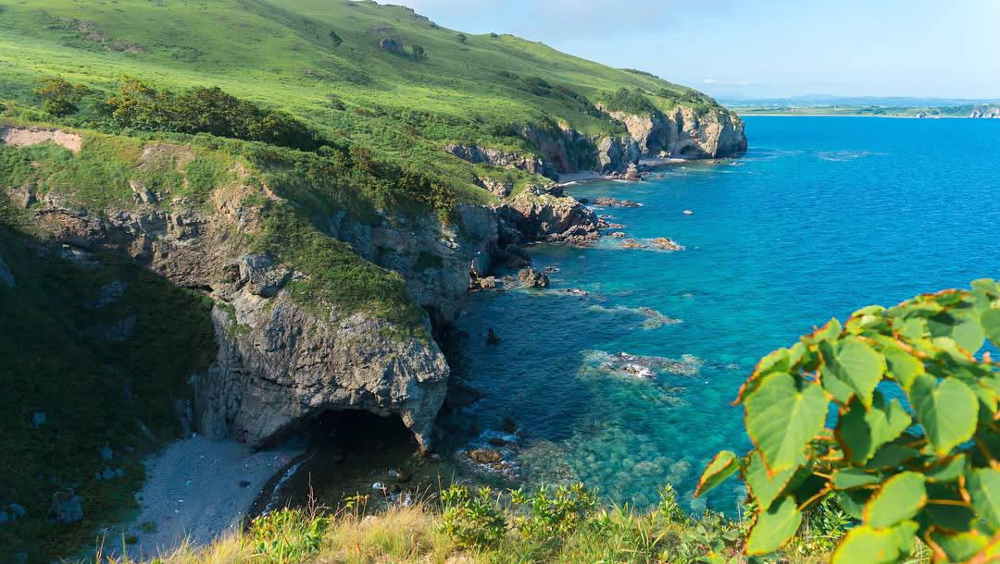
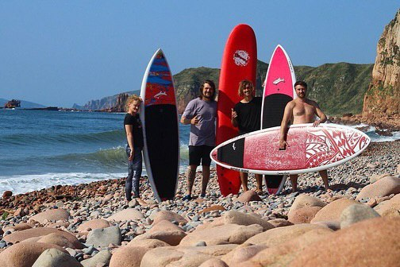

Владивосток — путешествие
к Тихому океану
Неделя у океана в заповедной зоне
серфинг в Японском море, хайкинг по сопкам, рыбалка и дальневосточная кухня
сентябрь 2026
Обсудить детали
Неделя у океана в заповедной зоне
серфинг в Японском море, хайкинг по сопкам, рыбалка и дальневосточная кухня
сентябрь 2026
Обсудить детали
Waterman с более чем 20-летним опытом. Родился и вырос во Владивостоке, где и научился кататься.
Участник чемпионатов мира по виндсерфингу и тестов олимпийского оборудования. Катается на спотах, доступных только серферам высокого уровня, и уже 15 лет обучает тому, чем занимается профессионально — поэтому его студенты прогрессируют быстрее.
Эксперт Forbes, «Вокруг света» и Men Today.
Пару дней в городе, все остальное время — на природе. Формат для тех, кто хочет меньше смотреть в телефон и больше на красоту окружающего мира.


Проведем эти дни как настоящие дальневосточники — серфинг в Японском море, рыбалка, прогулки на катере и исследование побережья.
Познакомимся с морскими котиками, исследуем живописные бухты на SUP, сходим на хайкинг и поужинаем легендарными приморскими гребешками.




Будем жить в заповедной зоне у границы с Северной Кореей — в месте, скрытом от посторонних глаз.
Размещение в домах из натурального бруса с панорамным видом на море, recovery area — бассейн, баня и холодная купель.
Лучшее время для поездки во Владивосток. Теплая вода, свежий сухой воздух и отсутствие туристов, потому что это — четвертый месяц лета, о котором мало кто знает.

— Вы хотите увидеть Приморский край таким, каким его видят местные, а не туристы
— Вы хотите посерфить в Японском море
— Вы цените профессионализм
— Вы хотите увидеть удаленные красивые локации и умеете наслаждаться природой
— Вы хотите перезагрузиться и вернуться домой отдохнувшим